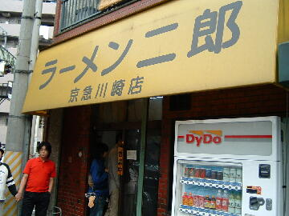
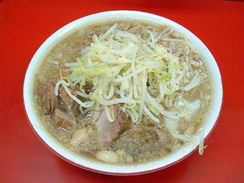

川崎市 川崎区 本町 2-10
日・祝
11：00〜14：00 18：00〜22：00
土 11：00〜16：00

小ラーメン 730円、小ブタ 830円、小ダブル 930円
大ラーメン 830円、大ブタ 930円、大ダブル 1030円
店員は、笑顔が魅力の店主とバイト。
白コショウ。しょうゆダレ。微粒の一味と大粒の一味。
レンゲ有、ティッシュ有、名刺有。
BGMは、ＦM。
トッピングは、通常。
メルマガは「a0001675511@mobile.mag2.com」で用意されている。
「ラーメン二郎 川崎」でヤフー検索
「ラーメン二郎 川崎」でヤフーリアルタイム検索
「ラーメン二郎 川崎」でグーグル検索

小ブタ ニンニク
麺は、平ストレートで加水率高めのツルツル柔麺。量は少なめ。麺硬は出来ない。
ぶたは、柔らかく厚切りでかなりの出来。ブレるときもある。
スープは、醤油ライト系の美味しさ。背脂も。
ヤサイは、モヤシ9：キャベツ1の割合。ゆで方はやや柔らかめ。
ニンニクは、インパクトのあるキザミナマニンニク。
ＰＣ店